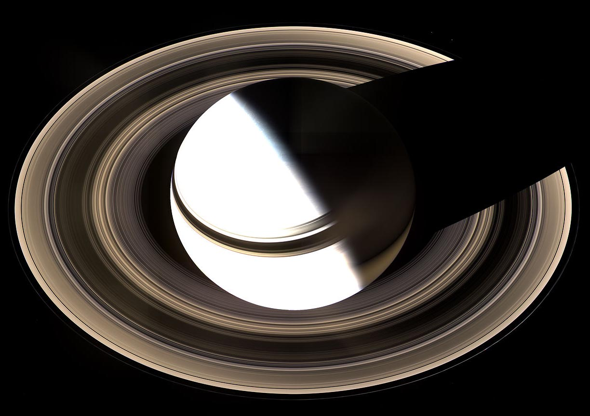

Saturn is the sixth planet from the Sun and the second largest planet in the Solar System, after Jupiter. Named after the Roman god of agriculture, its astronomical symbol represents the god's sickle.
Saturn is classified as a gas giant because the exterior is predominantly composed of gas and it lacks a definite surface, although it may have a solid core.
Saturn is probably best known for the system of planetary rings that makes it visually unique.

There are two main hypotheses regarding the origin of the rings. One hypothesis is that the rings are remnants of a destroyed moon of Saturn.